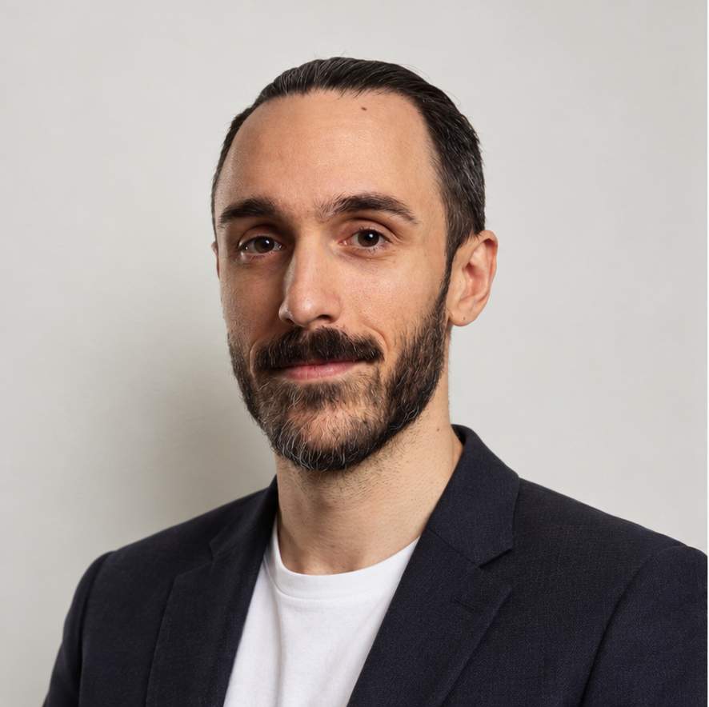

Čevora.xyz
Nikola Loncar

Nik je zkušený softwarový inženýr s více než 15 lety praxe v dodávání náročných projektů. Ve své kariéře opakovaně pomáhal klientům zvyšovat příjmy, snižovat náklady a efektivněji využívat zdroje. Pro globální EdTech produkt například snížil podíl neplánované práce o 90%, což vedlo k výraznému zlepšení provozní efektivity.
Během své kariéry se podílel na uvedení řady SaaS produktů a řešení na trh a na zvyšování jejich kvality na úroveň odpovídající či překračující oborové standardy. Mezi jeho projekty patří například systém pro správu produktové odpovědnosti podporující významnou část britské petrochemické výroby a obchodu, nebo EF SET — jeden z nejrozšířenějších online systémů pro testování angličtiny.
Ve společnosti Arca Blanca vybudoval softwarovou inženýrskou funkci od základů. Zavedl osvědčené postupy, rámce a procesy škálovatelné pro rychlý růst firmy, včetně firemního rámce Sales Governance, který přinesl přibližně 50 000 GBP dodatečné ziskovosti projektů. Pod jeho vedením se inženýrský tým stal klíčovým zdrojem inovací a systematicky dodával výkonná řešení v souladu s obchodní strategií společnosti. Osobně se podílel na téměř všech technických projektech firmy v roli technického lídra.
Nik je také uznávaným důvěryhodným poradcem velkých a významných klientů. Pravidelně se účastní jednání na úrovni vedení společností a buduje dlouhodobé vztahy založené na důvěře a měřitelných výsledcích. Jeho odbornost byla klíčová při pomoci organizacím získat certifikace ISO 9001 a ISO 27001 a zajistit dodržování vysokých standardů kvality a informační bezpečnosti řadě společností.